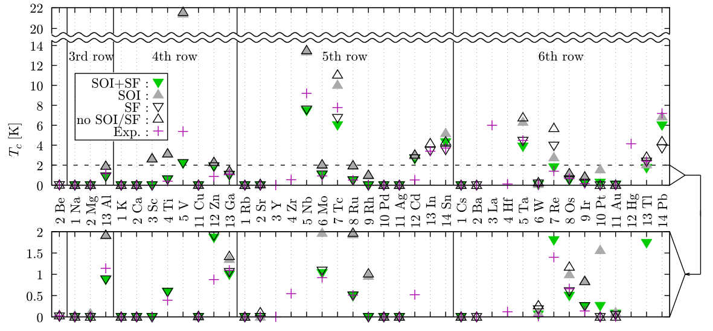

金属の温度を下げていくと、ある点で電気抵抗が急激にさがりゼロになる。 またこのとき金属の中の電子は個々ではなく集団として運動しており、それに起因する数々の興味深い性質を示す。 金属の性質に著しい変化をもたらすこの現象は超伝導と呼ばれており、リニアモータカーや画像診断装置に使われる超強力な電磁石、 高感度の磁気センサー、量子コンピューターの演算装置、送電線などでの応用がなされている。 超伝導材料としての性能を表す指標の一つに、その物質が何度以下で超伝導になるかという転移温度(Tc)がある。 多くの物質ではこのTcは10 K程度かそれ以下であり、そのため冷却のために大きなコストがかかる。 そのためより高いTcを持つ物質の探索が行われてきた。 そのような中で二ホウ化マグネシウム(MgB2, 39 K)や銅酸化物系(約90 K)などの超伝導物質が見つかり、 また近年では超高圧下での水素化合物の高温超伝導(約200 K)が報告されている。 ただしこれは常圧に取り出すことが難しく、常圧でもそのようなTcを示す物質の研究が盛んにおこなわれている。
When we cool a metal, suddenly its resistivity drops to zero. Furthermore, the electrons at that state move collectively rather than independently and indicate various interesting properties reflecting this collective motion. This phenomenon providing such a drastic change in metals is called superconductivity and is applied, for example, superstrong electromagnet in the magnetically levitated train and diagnostic imaging unit, magnetic-field sensor, quantum computing device, and electro power cable. Superconducting transition temperature (Tc) below which the system becomes a superconductor is one of the indices of the performance for a superconducting material. Tc is around 10 K or lower for typical materials and this requires a lerge cost for cooling. Therefore, materials having high Tc have been explored. Through that exploreation, magnesium diboride (MgB2, 39 K) and cuprates (about 90 K) were found, and recently, hydrides under a extreamely high pressupre (about 200 K) were found. However, it is challenging to bring the last one under ambient pressure, and such a high-Tc materials stable at a lower pressure is desirable.
超伝導密度汎関数理論(SCDFT)はTcの第一原理計算に使われる手法の一つであり、 電子-フォノン相互作用・電子間クーロン相互作用・スピン揺らぎ効果を非経験的に取り入れた計算を行う事ができる。 この手法は主にフォノン型超伝導体の計算に用いられてきており、 MgB2のマルチギャップ構造の解明や硫化水素超伝導体の構造とTcの関係を調べるのに役立ってきた。 我々はSCDFTをさらに多くの物質に適用し、この第一原理超伝導物質探索の研究を加速させたいと考えており、 そのためにオープンソースプログラムSuperconducting-Toolkit (SCTK) [1]の開発・公開と、 それを用いたTc予測の精度検証を行った [2]。 このベンチマークでは最も単純なターゲット群-35種類の単体金属(非超伝導体を含む)-を対象とし、 またその際にスピン揺らぎ効果(Spin-Fluctuation, SF)とスピン-軌道相互作用(Spin Orbit Interaction, SOI)を同時に取り扱う手法を定式化してその効果についても調べた(図)。 このようなベンチマークは、今後のハイスループット計算による超伝導物質探索や豊富な検証結果を用いた手法改良へとつながるマイルストーンとなる。
Density functional theory for superconductors (SCDFT) is one of the first-principles methods to compute Tc, and it can treat the electron-phonon interaction, electronic Coulomb interaction, and spin fluctuation (SF) fully non-empirically. This method has been applied to mainly the phonon-mediated superconductors. For example, SCDFT is used to reveal the origin of the multiband superconductivity in MgB2, the relationship between the structure and Tc of hydrogen sulfides. We plan to apply this method to a wide variety of materials and accelerate the first-principles exploration of superconductors. For this purpose, we are developing an open-source software Superconducting-Toolkit (SCTK) [1], and release that software on the Web. Also, we perform a benchmark to the simplest superconductors and non-superconductors, namely 35 elemental metals [2]; we formulate a method to treat SF together with the spin-orbit interaction (SOI) and investigate these two effects on Tc (see figure). This benchmark will be a milestone for exploring superconductors with high-throughput computations and methodological improvements in the future.
 超伝導転移温度の計算値と実験値。Calculated and experimental Tc (from Ref. [2])SCDFTではTc以外にもボゴリューボフ-ド・ジャン-コーン-シャム系の超伝導ギャップを得ることができる。 これはトンネル伝導や超音波吸収などの実験で観測されるギャップと一致する保証はないが、弱結合の場合には定性的な比較ができることが経験的に知られている。 そのような解析の例として、実験からも示唆されている通り、SCDFTで求めた MgB2の超伝導ギャップ はフェルミ面ごとに異なる値を持っている。 これはそれぞれのフェルミ面を構成する電子状態が異なっており、より電子フォノン結合が強いバンドが大きな超伝導ギャップを持っているためである。 同様にYNi2B2Cでも、フェルミ面を構成する電子状態のキャラクターの違いにより、 異方的な超伝導ギャップ関数 が現れる。 この場合には同じフェルミ面内でのギャップ関数の連続的な変化が起こっており、これはコーン-シャム軌道に対する ニッケルの原子軌道からの寄与 と負の相関を持っていることを我々は見出した [3]。
Other than Tc, SCDFT can obtain the superconducting gap of the Bogoliumv-de-Gennes-Kohn-Sham system. Although this gap function is not guaranteed to be identical to the gap observed in the experiments, such as the tunneling conductance and ultrasonic attenuation, it is empirically known that such an SCDFT gap is used for a qualitative analysis of weak-coupling superconductors. As an example of such an analysis, the gap function of MgB2 has different values for each Fermi surface as expected by experiments. This multi-band superconductivity comes from the fact that each Fermi surface consists of different electronic bonding states, and the band with stronger electron-phonon interaction has a larger superconducting gap function. Also in YNi2B2C, anisotropic superconducting gaps appears because of the variation of the character of electronic states on Fermi surfaces. In this case, the gap function varies continuously on a Fermi surface; we revealed that this varying gap function is negatively correlated to the contribution from Ni d states to the Kohn-Sham orbitals [3].